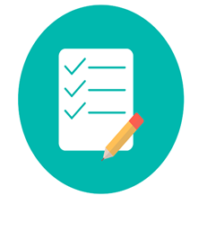

EVALUACIONES
Este mensaje es de etiqueta style ^ color violeta
Aquí vamos a evaluar tus conocimientos sobre programación web. Tienes una oportunidad y para pasar debes tener un puntaje mayor a 7 sobre 10. Al finalizar te diremos en que fallaste y tendrás una retroalimentación.
Evaluacion 1

Evaluacion 2
Evaluacion 3